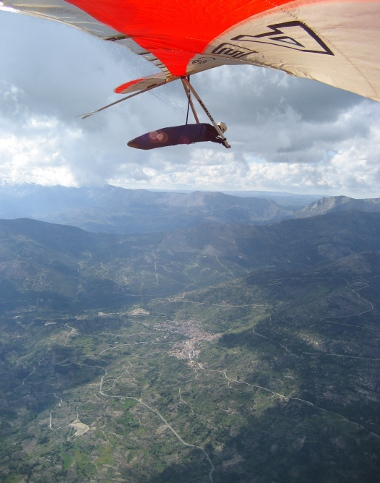

Reglamento y notas
En este enlace tenéis a vuestra disposición el Reglamento del I Open de Pedro Bernardo de Ala Delta. Como resumen del mismo extraemos las siguientes notas:
- Habrá una cena inaugural el Sábado día 28, y una entrega de premios el martes día 1 con comida y bebida a discreción.
- Los tres mejores clasificados en cada categoría recibirán un trofeo acompañado de algún regalito de la zona.
- La responsabilidad y la seguridad de cada piloto corre a cargo del mismo (cómo cuando vamos a volar normalmente). Para participar será imprescindible presentar el correspondiente seguro de responsabilidad civil que cubra la actividad de vuelo libre en ala delta.
- El transporte de alas y la recogida corresponde a los propios participantes; si necesitáis conductores, desde la organización os los podemos proporcionar con un precio razonable por sus servicios (ver información de contacto en el Reglamento).
- Para cualquier duda o sugerencia podéis utilizar el correo electrónico del foro que hemos habilidado para la prueba opendeltietar@googlegroups.com.
- Si todo esto te suena bien y te apetece participar mándanos tus datos por medio del formulario de inscripción.